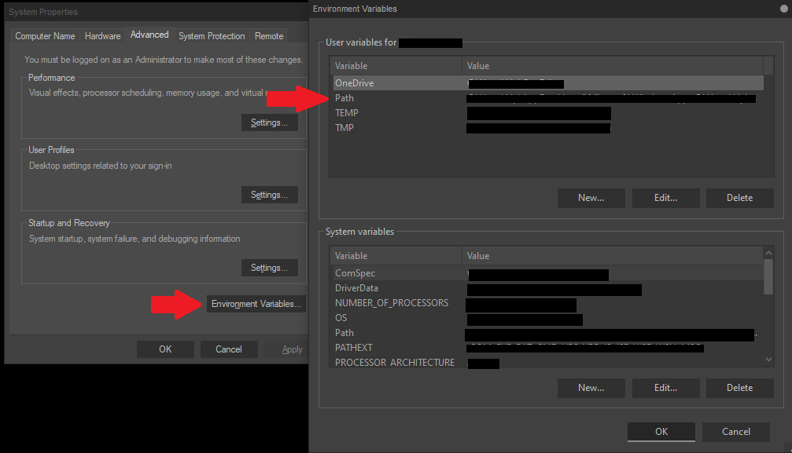

Nougat Documentation
III - Environment Set-up
3.1 System Requirements
Nougat doesn't require much, as it is written in a low-spec laptop. However, below is the list of specification details for Nougat installation.
| Processor | 1GHz |
| RAM | 512MB (only tested on >2GB) |
| Minimum Disk Space | 100MB |
3.2 Downloading and Installing
First of all, the official download page of the Nougat is here, then you can follow the steps below for further detailed installation instructions.
|
After downloading the Nougat from the official download page, extract the zip file from your desire location. The zip file is supposed to contain these files: The bin folder contains the important binary/executable files, while the docs folder contains this complete documentations, and the examples folder contains some example of Nougat programs. It is also highly recommended to open the README.txt file, it contains some must-read notes. |
|
If the zip file was successfully extracted, copy the folder path of the bin folder where you extracted the files. Type "Environment Variables" from the Windows Start search bar, open the "Edit the system environment variables." It will then show a window similar to the left window in the image below.  Click the "Environment Variables..." button and a similar window the right window will open. Now, click the variable PATH from the table and add the folder path of the bin folder from where you extracted the Nougat zip file. Finally, click "Ok" to close both windows. |
|
And now, Nougat is installed on your machine. You can now open the console (or any other available command line on your machine) and type "nougat" to ensure that the installation was successful. If the console shows something like in the image above, the installation was successful. |
3.3 Getting Started
If the installation was successful, you can now start coding and running your Nougat script files via console (or any other available command line).
hello_world.nou
fun main() {
render "Hello, world from Nougat!"
}
Now, save the file with the file name indicated above (the italicized text above the code). Open a console then type the following:
nougat hello_world.nou
The output will then be printed in the console. Have fun coding!